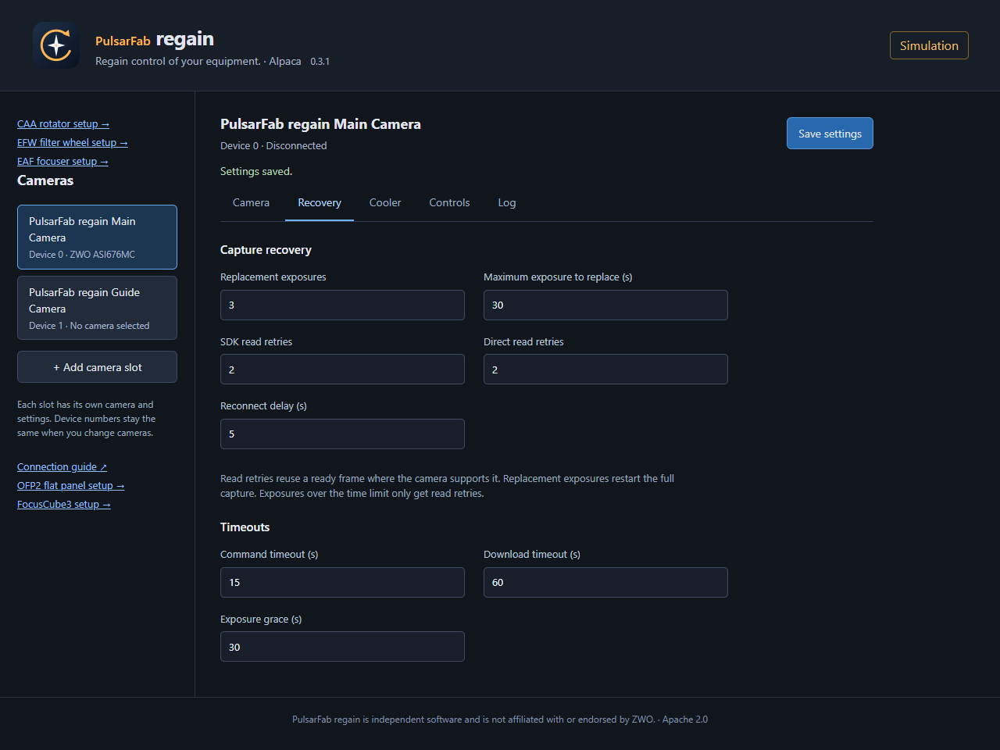

regain documentation
Cameras & recovery
Retry the download before repeating the exposure.
Use PulsarFab regain Retryable Camera in NINA, a native ASCOM camera entry, or an Alpaca camera slot. All three share the same recovery settings.
Choose SDK-free or SDK mode
Direct USB (experimental) talks to supported cameras without the ZWO SDK. On cameras with reread support, it can restart a failed download from the image still held in camera memory. That saves the original exposure, including a long integration.
ZWO SDK is the default for broader ASI support. The SDK runs in a separate worker so regain can restart it if it hangs. Download retries are possible while the SDK still reports an image ready.
| Camera | SDK-free capture | Same-image download retry | SDK mode |
|---|---|---|---|
| ZWO ASI2600MM Pro | Yes | Yes, through the direct driver | Yes |
| ZWO ASI6200MM Pro | Yes | Yes, through the direct driver | Yes |
| ZWO ASI676MC | Yes | Yes, through the direct driver | Yes |
| ZWO ASI220MM Mini | Yes | No direct reread support | Yes |
| Other ZWO ASI cameras | No | Only while the SDK still reports an image ready | If supported by the bundled SDK |
Direct USB is experimental. In SDK mode, download retries depend on the SDK's ready-frame state; they do not use regain's direct memory reread.
Select the backend in camera setup before connecting. See direct capture limits for supported formats, binning, and exposure lengths. SDK-free capture still requires the OS camera USB driver.
Set your retry policy
| Action | Default |
|---|---|
| Retry the image download | 2 retries |
| Reconnect and take a replacement exposure | 3 retries, for exposures up to 30 seconds |
| Wait before reconnecting | 5 seconds |
A download retry keeps the original exposure. A replacement exposure starts again. Direct cameras with reread support can retry downloads at any supported exposure length, independent of the replacement-exposure limit.
Set a retry count to zero to disable that action. Your imaging application waits during recovery and receives an error if recovery fails. Rereading requires the image to remain in camera memory; power loss can erase it.
{kind=link}

Handle failed USB transfers directly
The SDK-free driver controls the transfer and the reread. It limits stalled downloads, cancels outstanding transfers safely, and rejects incomplete images. Each reread starts at the beginning of the retained image with a fresh download timeout.
Recovery depends on the camera keeping the frame available. For implementation details and tested recovery conditions, see the USB transport notes.
Restore camera and cooler settings
After reconnecting, regain restores camera settings and waits for cooling to recover before a replacement exposure. If cleanup fails after a successful download, it keeps the image and reconnects before the next capture. Abort never starts a replacement exposure.
Optional SDK fallback
Enable Fall back to SDK to switch from Direct USB to the SDK after a failure. It keeps the same camera and stays in SDK mode until disconnect. Any replacement exposure still needs to fit your configured retry limit.
Logs record recovery attempts and final errors. See settings and troubleshooting for log locations.